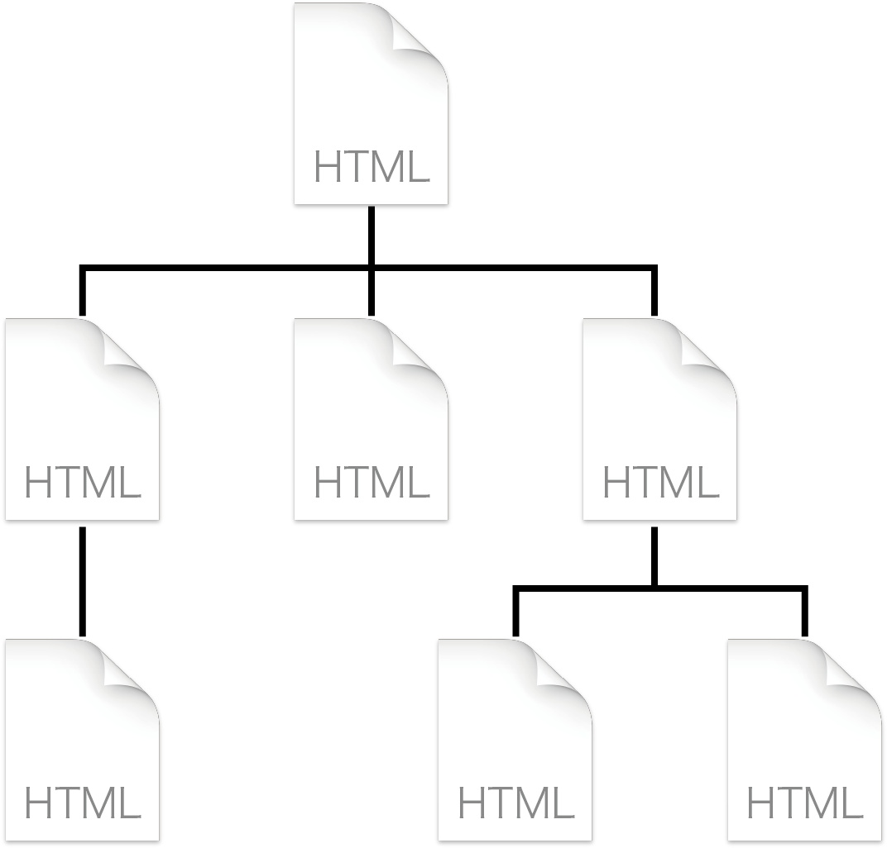
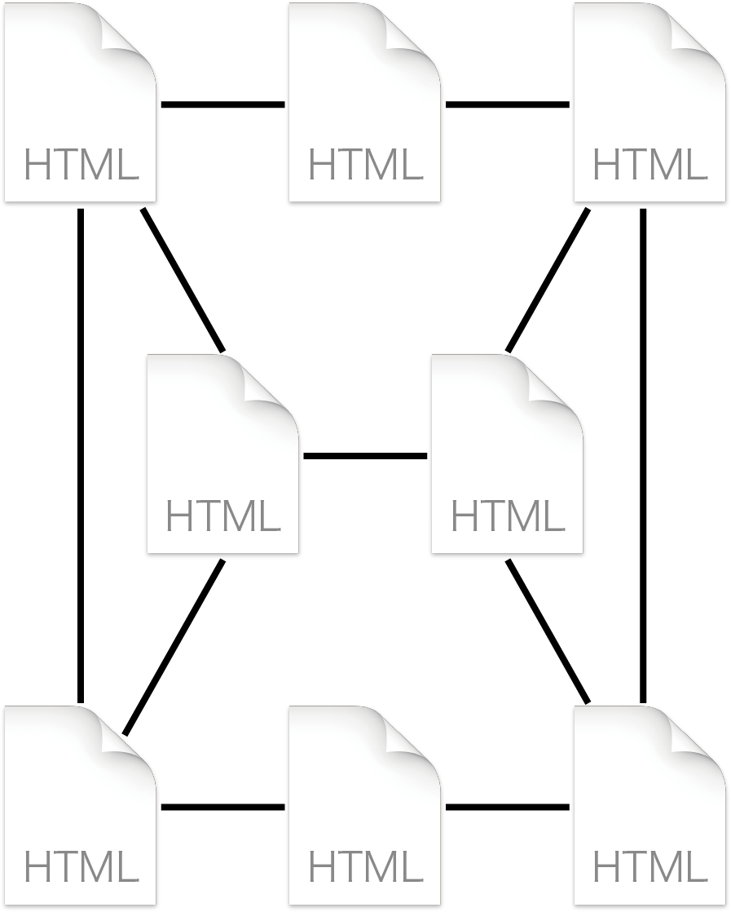

(1) Webサイトの構造
Webページの集まりをWebサイトという。Webサイト内のWebページはハイパーリンクでつながれ、このつながりをどのように構成するかでWebサイト全体の構造が決まる。
直線的構造
ユーザに順を追ってページを進んで欲しい場合に有効な構造です。
階層構造（ツリー構造）
サイト内で現在地を把握しやすい構造です。階層を深くするとクリック数も増えるため、注意が必要です。

網状構造
ページ間の移動が自由なのでリンクを設置しやすいが、全体像が捉えにくい。

(2) 階層構造の例
海城のホームページは次のような階層構造となっている。
トップページ（index.html）
├── 海城について
│ ├── 海城について（about.html）
│ ├── 理事長・校長挨拶（message.html）
│ ├── 学校沿革（history.html）
│ ├── 施設（facilities.html）
│ └── 校章について（brand.html）
├── 学校生活
│ ├── 学校生活（school-life.html）
│ ├── 学校行事（event.html）
│ └── クラブ活動（club.html）
├── 海城の教育
│ ├── 海城の教育（education.html）
│ ├── カリキュラム（curriculum.html）
│ ├── 各教科紹介（subject.html）
│ └── グローバル教育（global.html）
├── 受験生の方へ
│ ├── 受験生の方へ（admission.html）
│ ├── オープンキャンパス（orientation.html）
│ ├── 入試Ｑ＆Ａ（faq.html）
│ ├── 各入試要項（general.html）
│ └── カリキュラム（curriculum.html）
├── 進学状況（career.html）
├── 最新情報（news.html）
├── 在校生 保護者（students-parents.html）
└── アクセス（access.html）